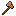
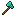
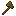

#minecraft:axes
物品标签 · 20 个已收录成员
标签成员 (20)
 热泉石斧
热泉石斧eternal_starlight:thermal_springstone_axe
 永冻石斧
永冻石斧eternal_starlight:glacite_axe
 星钻斧
星钻斧eternal_starlight:starlit_diamond_axe
 深银斧
深银斧eternal_starlight:deepsilver_axe
 虚素斧
虚素斧eternal_starlight:unrealium_axe
 瘴紫石斧
瘴紫石斧eternal_starlight:malarite_axe
 辛果斧
辛果斧eternal_starlight:pungency_fruit_axe
 星火斧
星火斧eternal_starlight:starfire_axe
 流璃斧
流璃斧eternal_starlight:flowglaze_axe
 绯夜脂斧
绯夜脂斧eternal_starlight:amaramber_axe

everythingcopper:copper_axeeverythingcopper:copper_axe
 链锯
链锯oritech:chainsaw?钷战斧
oritech:promethium_axe
 末影电磁炮
末影电磁炮oritech:portable_laser

钻石斧minecraft:diamond_axe
 石斧
石斧minecraft:stone_axe
 金斧
金斧minecraft:golden_axe
 下界合金斧
下界合金斧minecraft:netherite_axe

木斧minecraft:wooden_axe
 铁斧
铁斧minecraft:iron_axe
使用该标签的配方
无